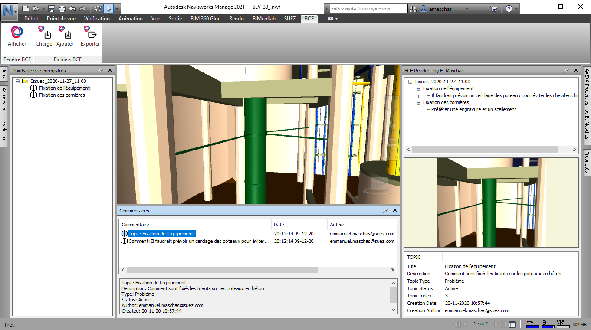

|
BCFclass
File reader for BIM Collaboration Format (BCF) files
|
|
BCFclass
File reader for BIM Collaboration Format (BCF) files
|
The BCFclass class contains the structures and the methods to read a BCF file.
In addition, the following classes have been extracted from the BCF file schema (see References)
BIM Collaboration Format (BCF) allows different BIM applications to communicate model-based issues with each other by leveraging IFC models that have been previously shared among project collaborators.
More specifically, BCF works by transferring XML formatted data, which is contextualized information about an issue or problem directly referencing a view, captured via PNG and IFC coordinates, and elements of a BIM, as referenced via their IFC GUIDs, from one application to another.
BCF files contain the issues or problems (deisgnated as topics" but not the BIM model itself.
Description of BCF files and their usage :
https://technical.buildingsmart.org/standards/bcf
The BCF file schema is detailed in :
https://github.com/buildingSMART/BCF-XML/tree/master/Documentation

By Emmanuel Maschas - 16-12-2020